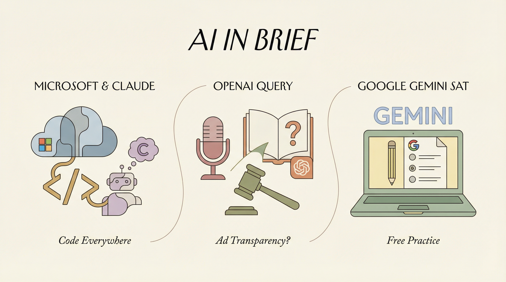

Blockit公司推出AI日历谈判代理，获得500万美元种子轮融资。
两克伴AIGC日报
2026-01-23 星期五

本期关注：LiquidAI推出边缘运行LFM2.5模型，900MB内存手机完成复杂推理；DeepSeek-V3.2以十分之一成本媲美GPT-5性能，开源推动AI普及；GLM4.7-Flash REAP精简版优化代理编码效率，AI轻量化与低成本趋势显著。
📰 行业动态
微软Paint和Notepad应用新增AI功能，支持编辑文本和制作数字插画。
OpenAI任命Barret Zoph领导企业市场拓展，Zoph上周重返公司。
🔥 今日焦点
LiquidAI近日发布了LFM2.5-1.2B-Thinking推理模型，这是一款完全在设备上运行的推理模型。两年前需要数据中心支持的任务，现在只需900MB内存的手机即可完成。该模型针对简洁推理进行训练，拥有1.2亿参数，在生成答案前会生成内部思维轨迹，实现边缘级别延迟的系统性问题解决。在工具使用、数学和指令遵循方面表现出色，性能上与Qwen3-1.7B相当，甚至在参数减少40%的情况下，在大多数性能基准测试中表现更优。在推理时间上，其速度和内存效率均优于纯Transformer模型和混合架构。LFM2.5-1.2B-Thinking的发布，标志着AI推理技术向边缘计算领域迈出了重要一步，对AI领域的发展具有重要意义。
---
DeepSeek近日发布了V3.2版本，这是一款开源模型，据称在数学推理能力上与GPT-5相当，但运行成本仅为后者的十分之一（每百万个token仅需0.028美元）。通过采用创新的“稀疏注意力”架构，这家中国实验室以约550万美元的总训练成本实现了前沿级性能，相比之下，美国科技巨头在GPT-5上的投入超过1亿美元。这一突破性进展不仅降低了AI模型的运行成本，也为开源AI研究提供了新的可能性。DeepSeek-V3.2的成功，对AI领域具有重要意义，它将推动更多研究者和企业投身于开源AI模型的开发，加速AI技术的普及和应用。
---
近日，Reddit用户u/ilzrvch发布了一则关于GLM4.7-Flash模型的最新进展。该团队推出了25%精简版本的GLM4.7-Flash，并正在开发MiniMax-M2.1。用户反馈指出，REAP剪枝对模型的创意写作和多语言能力有影响，这在针对代理编码优化的REAP中是预期结果。为了评估模型性能，团队在SWE-rebench排行榜上运行了mini-swe-agent流程，结果显示GLM4.7 REAP在模型大小与代理编码效率的Pareto前沿上取得了显著进步，超越了GLM4.6。MiniMax-M2.1的性能介于25%和40%精简的GLM4.7 REAP之间，预计将表现出色。这一进展对AI领域具有重要意义，不仅展示了REAP技术在模型压缩和效率提升方面的潜力，也为后续模型开发提供了有益的参考。
📚 深度长文
Theia Vogel在Gas Town同人小说中，通过将ChatGPT应用于国家形成理论的书籍总结，提出了独特的circumscription理论。她以计算机的物理边界为自然边界，将城镇视为具有冲突驱动的“大人物”，并通过调整Claude Max账户的分配方式，构建了一个基于固定分配的城镇系统。每个城镇获得一定数量的代币作为起始资金，并引入士兵角色，使其能够通过突袭其他城镇来争夺代币。这一创新性的设计不仅体现了平行代理和大型语言模型（LLM）的潜力，也展现了作者对复杂社会结构的深刻洞察。本文对于AI从业者和对复杂系统设计感兴趣的读者具有重要的阅读价值。
---
本文深入探讨了Claude Code团队的Chris Lloyd对于 Claude Code系统架构的独特见解。Lloyd指出，大多数人将Claude Code视为一个简单的文本用户界面（TUI），但实际上，它更接近于一个小型游戏引擎。文章详细阐述了Claude Code的工作流程，包括构建场景图、布局元素、将元素渲染到2D屏幕、与上一帧进行差异比较，最后利用差异生成ANSI序列进行绘制。文章强调，Claude Code的帧预算约为16毫秒，其中大约有5毫秒的时间用于将React场景图转换为ANSI序列。这一深度见解揭示了Claude Code在性能优化和效率提升方面的独特之处，对于AI从业者和相关领域的研究者具有重要的阅读价值。
---
《Last Week in AI #333 - ChatGPT Ads, Zhipu+Huawei, Drama at Thinking Machines》一文深入探讨了人工智能领域的最新动态。文章核心观点集中在OpenAI在ChatGPT中测试广告以缓解资金压力，红杉资本对Anthropic的投资，以及Zhipu AI打破美国芯片依赖的里程碑事件，以及硅谷科技巨头Thinking Machines的内部戏剧性事件。
关键论据包括OpenAI的财务困境与广告策略的尝试，红杉资本对AI伦理研究公司的投资，Zhipu AI在芯片供应链上的突破，以及Thinking Machines内部权力斗争对行业的影响。文章通过深入分析这些事件，揭示了人工智能行业在快速发展中面临的挑战和机遇。
📄 重点论文
**核心贡献**: 提出了一种名为Aeon的高性能神经符号内存管理方法，旨在解决大型语言模型在长时程交互中的推理能力退化问题。
**与AI Agent的关联**: 对AI Agent领域具有重要意义，因为它通过改进内存管理，增强了智能体在长时程任务中的推理能力。
**核心贡献**: 提出了TransportAgents，一个混合多智能体框架，用于解决交通事故严重程度预测中的异构数据和偏见问题。
**与AI Agent的关联**: 对AI Agent领域具有重要意义，因为它展示了多智能体系统在处理复杂任务中的应用潜力。
**核心贡献**: 提出了一种名为Agentic Uncertainty Quantification的方法，旨在解决AI Agent在长期推理中的可靠性问题。
**与AI Agent的关联**: 对AI Agent领域具有重要意义，因为它通过不确定性量化，提高了智能体的可靠性和鲁棒性。
🛠️ 产品推荐
Show HN: OPC Skills是一款专为个人创业者打造的AI技能集合，包含9个AI代理技能，助力提升工作效率。核心功能包括域名猎人、请求猎人、Logo创建器、SEO地理优化等。通过Markdown文件形式，AI编码助手可轻松加载和执行技能。该产品与Claude Code、Cursor、Windsurf、Droid等AI工具兼容，有效解决个人创业者面临的信息收集、品牌设计、SEO优化等问题，大幅提升工作效率。
---
Kite是一款轻量级的、生产就绪的智能代理AI框架，集成了Ollama技术。该框架旨在简化AI模型的开发和应用，为用户提供了便捷的AI解决方案。Kite的核心功能包括：快速构建智能代理、支持多种AI模型和算法、易于扩展和集成。通过Kite，用户可以轻松实现智能自动化，提高生产效率，降低开发成本。其创新点在于Ollama技术的应用，使得AI模型更加高效、智能。对于技术从业者来说，Kite是一款值得关注的AI框架。
---
Wake是一款终端会话上下文管理工具，通过PTY技术启动shell会话，并利用shell钩子捕获命令及输出。所有数据存储于SQLite数据库，并通过MCP服务器暴露，实现与Claude Code的终端历史查询。该产品有效解决了终端会话数据管理难题，提升工作效率，尤其适用于技术从业者。